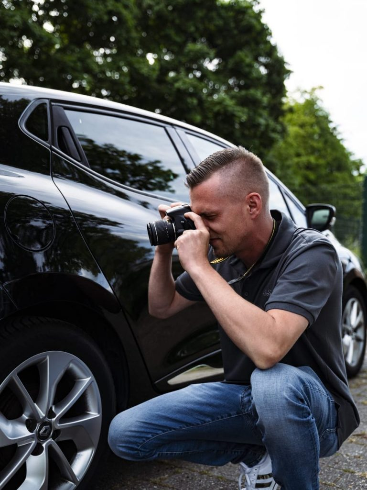

Schadengutachten, Wertermittlung und Batterieprüfung in Weilerswist und Umgebung. Persönlich, digital und oft schon am selben Tag vor Ort.

Wählen Sie Ihren Anlass – jede Leistung erklären wir transparent auf einer eigenen Seite.
Nach einem Unfall: vollständige, versicherungsanerkannte Erfassung Ihres Schadens.
Mehr erfahren →Fundierte Marktwertermittlung – für Verkauf, Versicherung, Erbschaft oder Finanzierung.
Mehr erfahren →Der faire aktuelle Wert – ideal für ältere, hochwertige oder besondere Fahrzeuge.
Mehr erfahren →Echten Akku-Zustand (State of Health) von E- und Hybridfahrzeugen ermitteln.
Mehr erfahren →Gebrauchtwagen-Check vor dem Kauf – keine bösen Überraschungen, kein Fehlkauf.
Mehr erfahren →Den optimalen Verkaufspreis erzielen – mit belastbarer Bewertung als Argument.
Mehr erfahren →Anruf, WhatsApp oder Formular – Sie schildern uns kurz Ihr Anliegen.
Wir kommen zu Ihnen oder ins Büro und dokumentieren das Fahrzeug professionell.
Sie bekommen ein vollständiges, nachvollziehbares Gutachten – schnell und digital.
Auf Wunsch unterstützen wir bei der Abwicklung mit Versicherung und Partnern.
Wir arbeiten neutral und ausschließlich in Ihrem Interesse – nicht für die Versicherung.
Kurze Wege in Weilerswist und der Region – Termine häufig noch am selben Tag.
Anwälte und Werkstätten an unserer Seite – für eine reibungslose Abwicklung.
„Nach meinem Unfall hatte ich schnell ein professionelles Gutachten. Alles wurde mit der Versicherung geregelt – top!"
„Sehr kompetente Kaufberatung vor meinem Gebrauchtwagenkauf. Hat mich vor einem teuren Fehlkauf bewahrt."
„Schnell, freundlich und absolut transparent. Das Wertgutachten war beim Verkauf Gold wert."
Persönlich erreichbar und mit Leidenschaft für faire, präzise Gutachten.
hartmann@sv-hart-mauer.de
0177 3529524
aufdermauer@sv-hart-mauer.de
0177 4630189
Mit Sitz in Weilerswist sind wir schnell bei Ihnen – im gesamten Rhein-Erft-Kreis und Umland.
Rufen Sie an, schreiben Sie per WhatsApp oder nutzen Sie das Formular – wir melden uns schnellstmöglich zurück.
Friedrich-Ebert-Straße 4 · 53919 Weilerswist
info@sv-hart-mauer.de
Kostenlos & unverbindlich. Antwort meist innerhalb 1 Stunde.